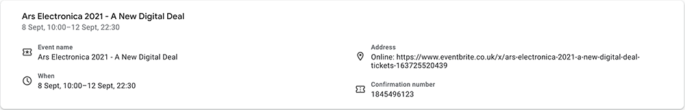
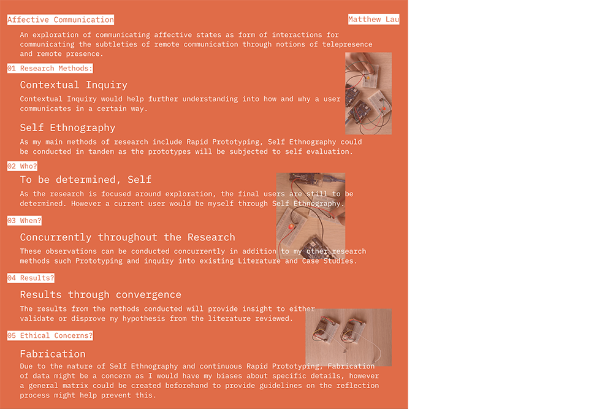
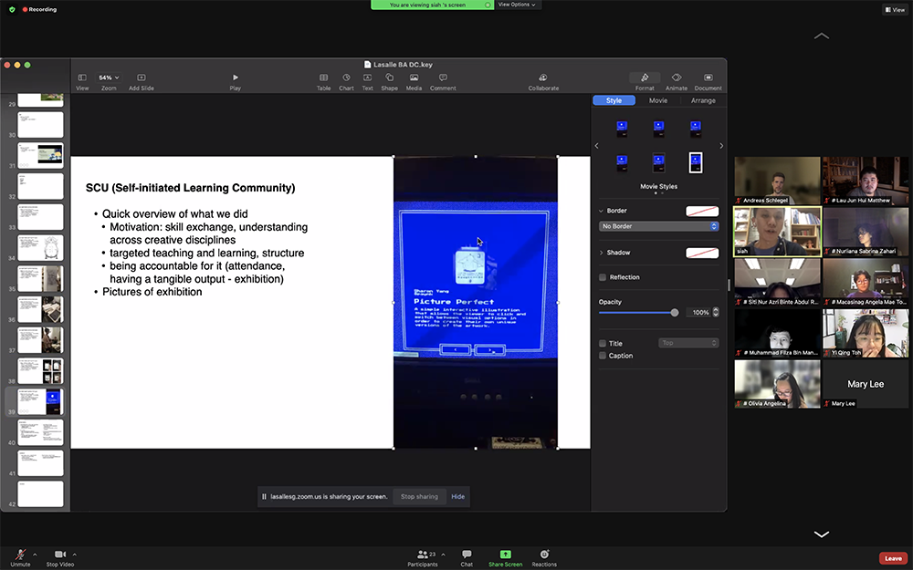
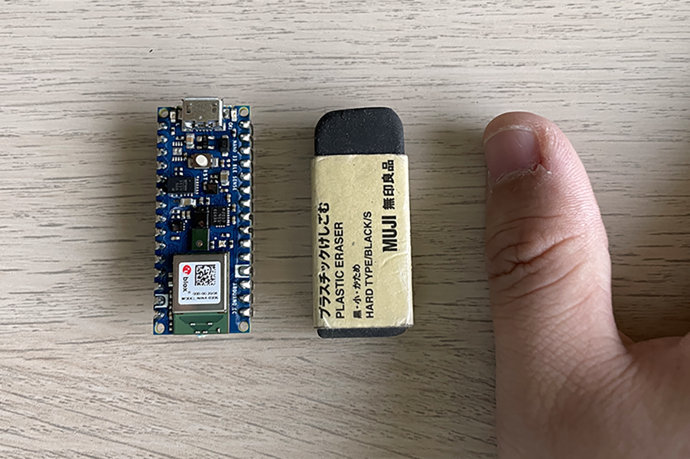

Semester One Week Five: 13.09.21 — 17.09.21
Dissertation:
// 13.09.21 - Festival: Ars Electronica 2021: A New Digital Deal. (WIP)
// 14.09.21 - Workshop/Seminar: Ethnographic Research Methods.
// 15.09.21 - Talk: Siah Tiong Hong from Screensavers.
Graduation Project:
// 16.09.21 - Arduino Exploration: Google Experiments TensorFlow Lite for Microcontrollers.
// 16.09.21 - Arduino Exploration: Google Experiments Finger User Interface.
// 16.09.21 - Arduino Exploration: Google Experiments Astrowand.
// 16.09.21 - Arduino Exploration: Google Experiments Air Snare.
// 16.09.21 - Arduino Exploration: Google Experiments Tiny Motion Trainer.
#S01W05 Appendices:
// 13.09.21 - Festival: Ars Electronica 2021: A New Digital Deal.
Got a virtual ticket to this year's Ars Electronica Festival and managed to catch a couple of events and talks live and on demand over the weekend, taking awhile to contextualize and update my takeaways from this fruitful experience, so this section is still WIP .
Image: My Ticket! Quite exciting attending my first online festival.
// End of this Section.
// 14.09.21 - Workshop/Seminar: Ethnographic Research Methods.
It was interesting to learn more methods of research from Clara, although I wasn't too sure which aspects of it I could use in my research, I thought Contextual Inquiry would be possible so as to gain some insights into how people communicate, also self ethnography might work with the self experimentation that I would be doing. So the who of it all, would be me and it would be done throughout the whole research phase of the dissertation and the results of the experimentation and self ethnography would be cross referenced with my literature review to see if the experiments worked or not.
Image: My contribution to the MIRO Board Mess, covering methods Clara taught in class and some of my own.
Something that I did not think too much of before today was the ethical considerations. Especially with me evaluating the experiments, surely I would have some biases which would potentially lead to the fabrication of some results. So I think one way to counter this would be to do as Vikas mentioned and create a matrix for the evaluation, this would help in ensuring a fair evaluation for all experiments as well as give me some guidelines to follow and fall back on.
// End of this Section.
// 15.09.21 - Talk: Siah from Screensavers Club.
Thought that was a really interesting talk from Siah, especially since he's a self taught coder (which I am semi-considered, I think?), and just his willingness to pick up something new is pretty admirable. I really liked the thing he made for his Self-Initiated Learning Community, where he basically made a floppy disk with an Arduino, it's such a simple idea as Andreas mentioned but executed really nicely. It also brings a tangible aspect to something screen related which is kind of what I'm trying to do with my research in a way. I also thought it was really cool of him to mention (quote below), cause those were the driving sentiments behind my research topic.
Siah
"We're here because we're at the intersection of communication and design. We're trying to communicate by using visuals, motion, even sounds and other senses to delight, surprise and inform."
Image: Siah's slides.
Not gonna lie, but the whole thing about simple ideas, kinda came at an awkward time, cause I've decided to experiment a little bit with a machine learning tool tomorrow, so we will see how that goes. But I do see the importance of keeping things simple and manageable (as with my experience with the projects from year two), but deep down kind of can't help pushing myself to keep trying out new and harder things. So I think from here on, it will be very important to find and manage the balance between them.
That got me thinking that there might be some value in looking at technologies of the past and bringing them back in a different way now. Maybe forms of communication like morse code could be explored and considered? Those are also forms of non-verbal communication. Was talking to Sing Hong and Thomas and thought that it might be really good if Siah was open to talking to us about our research sometime in the future when we've got ideas to talk about. And it might just be friends and join the community, it sounds really interesting.
// End of this Section.
// 15.09.21 - Arduino Exploration: Google Experiments TensorFlow Lite for Microcontrollers.
Went to check out the google experiments for the first time since working on my Research Compendium last semester and saw that they updated a new section which focuses on using microcontrollers and machine learning through TensorFlow Lite. This was interesting as the Arduino Nano 33 BLE Sense, was capable of running machine learning models on such a small device, that was quite mind blowing for me as they made a tool for easily capturing motion data to create microcontroller ready models.
Finding an Arduino Nano 33 BLE Sense was quite difficult in Singapore, I tried calling up most local shops and they didn't have it in stock, which meant that I most likely had to order one online, but luckily one of the stores called me back and said that they managed to find one last piece and I could pick it up tomorrow, so that saved me a week of waiting to get started with this exploration. However if I need more of them I would have to get them online as the store said that they would not be bringing them in for the time being.
Doing some further research into the Arduino Nano 33 BLE Sense This board was able to connect via bluetooth and run machine learning models, with a wide range of sensors built in to it. It had a 9 axis inertial, humidity, temperature, barometric, gesture, proximity, light color and light intensity sensors and also a build in microphone. To me this was quite interesting as if I was able to use some of those sensors to input data, together with it running a machine learning model, I could potentially explore ways for this "machine" to be able to recognise affective states, which is bringing the discipline of Affective Computing down to a smaller scale, exactly what I was thinking about doing.
Maybe the idea isn't to create some big complex sensing machine that's highly accurate, but just through small gestures, shift in temperature, proximity to something else or just a small movement like fidgeting, that could be recognised and interpreted to represent some emotion or feeling. But let's not get ahead of ourselves here, First I had to experiment with what was available to me open source, and then try to work some stuff out on my own before I can even think of the uses of it. Machine Learning is a whole other ball game but I'm honestly quite excited to take on the challenge or at the very least, attempt it.
Image: Size of the Arduino Nano 33 BLE Sense with eraser and thumb for scale haha.
// End of this Section.
// 16.09.21 - Arduino Exploration: Google Experiments Finger User Interface.
The first experiment that I toyed around with was the Finger User Interface (FUI). This experiment explores the possibilities of finger gesture as an interface for the manipulation of design on a website. The size of the Arduino was small enough to be attached onto or rather taped onto a finger. This opens up the range of potential applications widely.
Some thoughts on the FUI. Firstly on the gestures, amongst the few gestures possible (Left, Right, Twirl, Poke and Pluck), more distinct gestures, twirl, poke and pluck, were more intuitively picked up by the sensor, where slight gestures such as left and right, were sometimes ignored by the interface or mistaken as other gestures. While getting different people to try it out, I also realised that everyone does the gesture differently and due to that sometimes the gestures are picked up differently. Pluck and Poke would sometimes be messed up cause sometimes people's fingers are straighter and do not have a swinging motion, which would lead to it being interpreted as a poke instead, so it was good to find out that even such small details in the gestures would make a difference.
Next on the interfacing between device and web, the set up process was smooth, just uploading an arduino sketch (provided by them) to the device before pairing it with the website and it works from there. There wasn't any noticeable lag between the sensor and interface, even at longer distances (where we tried in the video from basically, halfway across D301). Everything was smooth, I won't command too much on the design of the site, but it would have been nice to have a clear screen button instead of having to refresh the page (hello google, thanks!) haha! Refreshing the page would lead to having to re-pair the device to the page and re-downloading of the model to the Arduino, which took a bit of time, but besides that functionality wise, everything works great.
This was a quite interesting to see how this could be a form of "wearable" tech and how just at a flick of a finger, you could control an interface. Could I pair this Arduino to a computer and have that run an app that would supplement current forms of communications? Could a gestural poke here send a signal to a device on the other end that would physically poke a person? Or maybe it could bring a form of gestural tactile control back to remote communication where you can interact with a physical object and that in turn could communicate something to the other side? Something quite interesting for me here is if it could pick up on the subtleties of things like "aggression" "peace" especially while you're typing a message or talking and your hands get agitated, could that be sort of trigger to activate something that shows that you're currently angry or calm?
Also running with the idea of a block party as Vikas kind of joked about a couple weeks back, I was thinking could this be used for entertainment or communicating while enjoying entertainment? Imagining a scenario where it's a listening party (remember those? don't think I've seen too many people host small listening parties recently besides me whenever I picked up a new vinyl record, and get some friends to come over to listen to it.) Maybe it could be a remote listening party so everyone's apart (it'll be kinda lame if everyone was sat facing a computer screen looking at each other's faces), but maybe this could sense if you're vibing to the music or if you're indifferent maybe that could manipulate an interface a certain way? Maybe it's a visualization or it's LED lights or some other output, an object? That could communicate the idea of remote presence subtly while enhancing a communal experience.
// End of this Section.
// 16.09.21 - Arduino Exploration: Google Experiments Astrowand.
Next experiment from the google experiments is Astrowand. This experiment looks at how the Arduino can be used to recognise shapes through drawing it out in a open space. This could be interesting in assessing how well the machine learning models can recognise bigger motions or more "precise" movement.
This experiment was less successful than the FUI in terms of success but learning wise it was great, it had some issues picking up some shapes being drawn and the frequency of it recognising the wrong input was higher than the FUI. And it really differs from person to person, personally I could not get it to draw a circle to save a life. But Thomas managed to draw a circle on his first try. I think that further emphasizes the point that despite these pre train models being pretty good, there's always a loss somewhere and it won't work perfectly for everyone at this point.
It's also interesting to thinking of this as being an extension of something through an object, I attached it to a pair of chopsticks and it still worked, so it's kind of cool that the Arduino is an extension of your finger through the chopstick? And that interfaces could be created as such?
// End of this Section.
// 16.09.21 - Arduino Exploration: Google Experiments Air Snare.
Third experiment was the Air Snare, basically it turns the Arduino that's attached to sticks into a drum set. It's quite similar to the Astrowand in that sense, but the input motion and output is different.
It's sort of like a combination of gesture motions from the FUI together with using the Arduino on another object of the Astrowand and it kind of works? I think one main flaw of this was that I couldn't really trigger the up-high motion. With it being the least successful of the 3 motions available. Also I think this would have been a good experiment, if I had two Arduinos so that I could test running two of them at the same time but that is an experiment for another time.
// End of this Section.
// 16.09.21 - Arduino Exploration: Google Experiments Tiny Motion Trainer.
They also released a code-free tool called the Tiny Motion Trainer that allowed for creating custom machine learning models that is compatible with microcontrollers using the built in Inertial Measurement Unit (IMU).
I thought this was a good introduction to machine learning, very similar to the Teachable Machine that google also released which was an easy way to train models using images, this used sensor input to map movements. The tool was quite straightforward to use and it was fairly intuitive.
I did an initial beginner experiment just using the preset setting to try to map the directions up, down, left and right through simple hand motions to see how it work and did 10 samples instead of the recommended 20 samples just to get a gist of what's happening. With each set of samples I tried moving it quickly vs slowly, sudden movement vs gradual movement, slight variations in how my hand moves or my finger moves each time just to try out different variations and give the machines more points to learn from.
I think the results were quite ok, with it being able to identify the right motion pretty accurately, I also tried to move in diagonal directions (which I did not train to to detect), and it kind of worked, giving me results like 60% up, 40% right which kind of represented the up-right direction as such. This was quite fun and I think I would try to refine the model more over the next week and maybe conduct more experiments with it.
With the tool being fairly easy to use, I think it's quite possible to maybe explore some options utilizing this new "direction" in my research. The more reading I did regarding Affective Computing has been getting me interested in exploring if the machines could recognise the affective states before communicating them and that is also sort of the difference between my research and my case studies, where for the case studies, the emotion or feeling had to be pre-determined or pre-negotiated for them to mean anything whereas if the machine is able to somewhat recognise a specific gesture (maybe say, slamming/punching of your fist or like a caress or vibing to something) and have those be related to affective states, it could then technically "sense" your feeling and communicate that.
Something I haven't figured out this was how would I take this data and apply it to an interface or something, That sounds like it's a whole other ball game and will probably require me to learn some other skills to get it to work. But that's a problem for am upcoming exploration as it's probably time I got caught up with my RPO.
It was quite timely that this new technology is made available to the public, as one of my considerations for the research was to also consider what's possible as well as finding a way to scale down affective computing to a level where it is accessible to more people and not gate kept as a point of interest in the highest levels of research. This is quite exciting for me as I did not think that machine learning would be something I would be capable of trying out and exploring but this makes it way more accessible than it was and I'm excited to see if the research could progress in this way.
-- End of the Week --